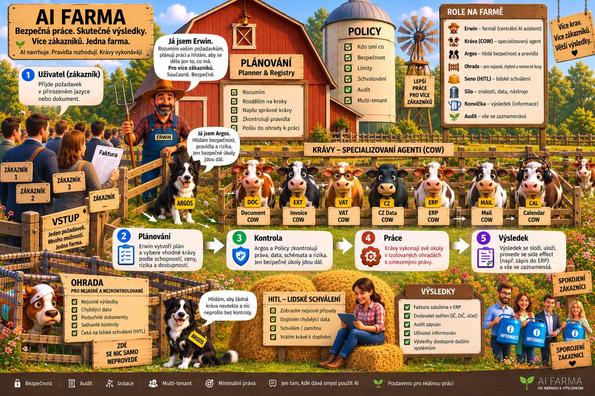

🐄
DokumentyDocument COW
Klasifikace, validace, razítkování a archivace dokumentů podle nastaveného toku.
Centrální asistent rozumí vašemu požadavku, pravidla rozhodnou co je dovoleno a specializované COW vykonají jen svou úzkou práci.

Každá kráva má úzký úkol. Centrální část farmy je skládá podle workflow a pravidel.
Klasifikace, validace, razítkování a archivace dokumentů podle nastaveného toku.
Příjem a odesílání e-mailů přes oddělený executor s omezenou odpovědností.
Deterministické ověření IČO, DIČ, plátcovství a účtů proti externím registrům.
Uživatel komunikuje s jedním vstupem. Farma uvnitř rozdělí práci na kontrolované kroky.
Web, e-mail, API, Telegram nebo další kanál.
Požadavek se převede na bezpečně vykonatelný workflow.
Identity, tenant, policy, schema, riziko a případné schválení.
Úzký worker provede jen svou capability s minimálními právy.
Data se uloží nebo předají dál a důležité kroky se zapíší do auditu.
Bezpečnost není prompt. Je v platformních kontrolách, signed contextu, oddělených executorech a minimálních oprávněních.
Na návrhu webu záměrně nepoužíváme vymyšlená procenta úspor ani přesnosti. Místo toho ukazujeme vlastnosti, které lze doložit implementací a měřením.
Začneme jedním konkrétním procesem a postupně připojíme další COW, vstupy a výstupy.